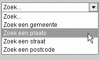

Het zoeken naar een gemeente kan door uw muis over het overzichtskaartje te bewegen en de gemeente die u zoekt aan te klikken.
Onder het overzichtskaartje bevinden zich de zoekmogelijkheden:
Hieronder worden de twee manieren van zoeken aan de hand van een aantal afbeeldingen uitgelegd. Deze twee manieren zijn: kiezen uit een lijst en vrij zoeken.
Klik nu op "Zoek een plaats":

Klik vervolgens op "Kies een plaats...":
Kies nu de plaats die u zoekt door de naam aan te klikken in de alfabetische lijst die verschijnt:
Na een klik op "Aalsmeer" zal de kaart Aalsmeer tonen.
Hierna verschijnt er een invul gedeelte waar u de straatnaam kunt intypen:
Type nu de gezochte straatnaam of een deel daarvan in het invul gedeelte:
Druk op de Enter toets of klik op de pijl rechts van dit invul gedeelte. Na enige tijd worden de zoekresultaten op alfabetische volgorde getoond:
Door een van de gevonden straatnamen aan te klikken uit deze lijst 'springt' de kaart naar die straat.
U kunt ook een deel van een straatnaam opgeven maar er is geen voorziening om spelfouten te herkennen.